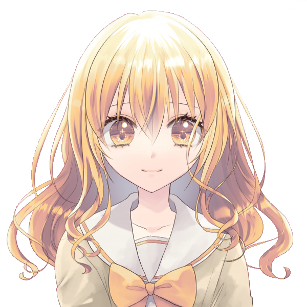
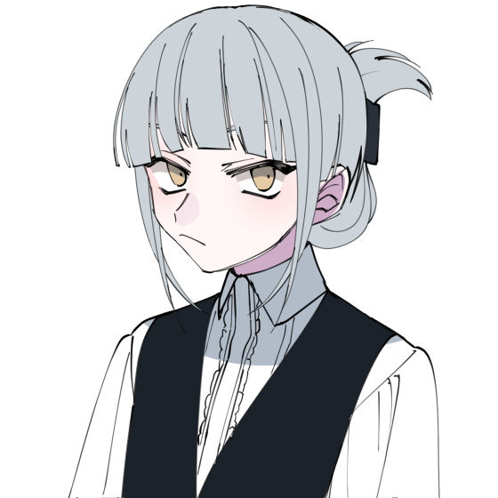
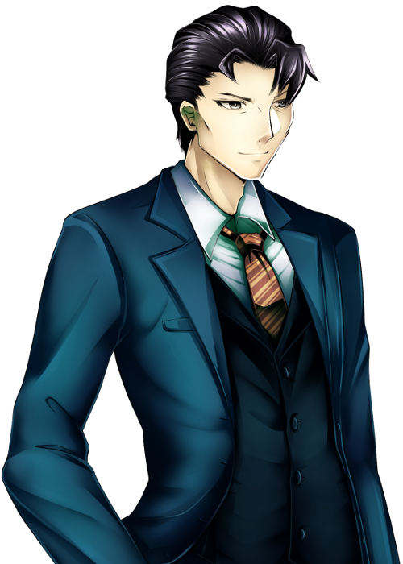

メインログ / 雑談ログ
キャラシート
PC1：遊佐ひまり (キャラシート) PL：めいPC2：ヴォルグ (キャラシート) PL：灸
PC3：天見礼司 (キャラシート) PL：カピバラ
PC4：小鳥居美夜凛 (キャラシート) PL：紫閃
目次
■プリプレイHO&PC紹介
■オープニングフェイズ
01 邂逅
02 不吉な前兆
03 全盛の再来？
04 運命流転
プリプレイ
HO&PC紹介
GM : それではひまりちゃんから自己紹介お願いします！
遊佐ひまり : はい！
遊佐ひまり : “サイバー・ホーネット”遊佐ひまり。
遊佐ひまり : 料理と家事が得意で、ご飯食べることが大好きな16歳の高校生です！
遊佐ひまり : でもある日FHに拉致されて機械化手術されたせいで、食事が出来ない体になりました。
遊佐ひまり : 親も友人もFHに殺されて何もかもを失ってるけど、今の自分に出来ることをしようと思ってUGNのイリーガルになって、頑張って前向きに生きています。
遊佐ひまり : 能力的にはブラックドッグ/エンジェルハイロゥの射撃型。右腕をガトリング砲に変形させて敵を蜂の巣にします！
遊佐ひまり : 以上で！
GM : あざます！おのれFH許さん…！応援したくなる子だね…
遊佐ひまり : いっぱい応援してくれ…！
GM : するぜぇ～？そんなひまりちゃんのHOはこちら
■PC1：遊佐ひまり
ロイス：”ブラックバード”黒河コウ（くろかわ・こう）
黒河コウは最近覚醒したと思われるオーヴァードであり、未だにどこの組織にも所属していないと思われる。
あなたはUGNからの監視任務を受け、ターゲットである彼を尾行していた。
しかし彼を追いかけている内に、あなたは様々な不幸に見舞われ追跡は困難を要する。
やっとの思いで彼に追いついたあなたは、そこで”ディアボロス”春日恭二と密会する様子を目撃してしまう…
遊佐ひまり : これもう絶対敵では？（トレーラーの感じも見ながら）
GM : ま、まだわからんよ…💦（8割敵の紹介）
遊佐ひまり : ほんとに～！？じゃああとの二割にかけて信じよう…
GM : うむ…（？）それじゃ次はPC2のヴォルグくん！自己紹介をお願いします！
ヴォルグ : はーい

ヴォルグ : ヴォルグ、情報屋のレネゲイドビーイングです。
ヴォルグ : 気怠そうな表情に2m超えの身長、寒がりで適当な性格の低体温男性です。
ヴォルグ : 日本名・本名はありません、本人が適当に名乗っているロシア語での狼"ヴォルグ"を本名としています。
ヴォルグ :
好きな物は甘い物、手近に甘い物がなければ角砂糖もそのまま口に放り込んじゃうぐらい…
表情は薄めだけれど物腰や喋り方は柔らかいです！大人よりJKぐらいの年代・趣味のほうが話題が合う様子。
ヴォルグ : 自らの身体を凍傷でズタズタにする氷特化サラマンダーに加えてブラム=ストーカーのオーヴァード。名前とその戦闘姿から、コードネームは"フェンリル"。
ヴォルグ : 以上です！
GM : あざっす！体格のギャップから繰り出される可愛い内面よ…
GM : ヴォルグくんのHOはこちら！
■PC2：ヴォルグ
ロイス：”バーサークビースト”八重乃波留（やえの・はる）
八重乃波留はUGNに所属するオーヴァードである
友人、または同僚であるあなたは彼女と共にN市内で起きている不可解な事件を追っていた。
それはUGN関係者に限り、事故や病気などの厄災に見舞われるなどという現象だ。
あなたはその調査を行うという彼女と会う為に、指定されたファストフード店に訪れる事となる。
GM : ハルちゃんがロイスでっす、後ファストフード店じゃなくてチェーンレストランで合流します！
ヴォルグ : 了解です！
GM :
うっす！
それじゃ次！天見くん自己紹介をお願いします！
天見 礼司 : ういっす！

天見 礼司 : と言いたいんだけどちょっと用意していた自己紹介がちょっと趣旨とずれていたんだけどもいいかな？
GM : いいよ～、どんなのか見せてくれ！
天見 礼司 : ほいっさ！
地の文さん :
「さて、どうしたものか......」
とある部屋で男は悩んでいた。
地の文さん :
「（引き際を考えるならここがちょうどいいとは思うが）」
積み上げられた報酬と周りを囲む人々を横目で見ながら思案を続ける。
「（相手を一文無しに出来るチャンスを見過ごす......?いーや、出来ないね）
地の文さん :
「わかったわかった、勝負するよ。ただ、やるからにはそれなりの覚悟はできてるんだろうな？」
そう言って、テーブルの上に賭け金を置く。
対面の男は、その賭け金の多さに一瞬驚くも同等の価値の山をテーブルに乗せる
天見 礼司 : 「さてと、お楽しみの時間だ」
カピバラ :
男が満足げに額き、カードを表にすると同時に、観衆が動き出した。
一人が男にとびかかり、もう一人が男の名前を叫びながら拳銃を抜いた。
それと同時に男はテーブルを蹴り上げ、宙に舞わせた。
地の文さん :
煙が立ち、紙幣とカードが降り注ぐ。
しばらくして煙が晴れた時そこに男と存在していたはずの賭け金や取り分はなかった。
代わりに床に、五枚のカードが表を上に、ひらひらと舞い降りた。
地の文さん : 勝利の手札だった。
天見 礼司 : とまあこんな感じ！
天見 礼司 : 普段はUGNの事務員として働いたり働かなかったりしてます！
GM : 事務員さんだったのか！は、働かなかったりする！
天見 礼司 : 戦闘スタイルはカードにオーヴァードとしての力を乗せる感じのデバッファー！
天見 礼司 : 以上かな？
GM : ありがと！貴重なデバッファーだぜ！この卓でギャンブラーは中々面白い立ち位置どすな…
GM : それじゃ天見くんのHOはこちら！
■PC3：天見礼司
ロイス：”リヴァイアサン”霧谷雄吾（きりたに・ゆうご）
あなたは日本支部に所属するUGNに協力的なオーヴァードだ。
現在、N市内で起きているUGNをターゲットにしていると思われる厄災。霧谷はこれをFHの攻撃であると推察する。
このまま攻撃が続けば日本支部の機能が麻痺しかねない。霧谷は頼みの綱であるあなたを頼り、事態の解決を依頼する。
GM : 霧ちゃんさんの胃が今回も破壊されます
天見 礼司 : ﾀｲﾍﾝﾀﾞﾅｰ
GM : ﾀｲﾍﾝﾀﾞﾈ…
GM : それじゃ最後！美夜凛ちゃんお願いしますー！
小鳥居美夜凛 : はいー!

小鳥居美夜凛 :
“スリーピー・ホロウ” 小鳥居美夜凛
首無し騎士デュラハンをモチーフとしたレネゲイドビーイングの女の子です。レネゲイドビーイングとしての個体名はニュイといいます。
小鳥居美夜凛 :
デュラハンなので頭と身体がお別れしてたりしてなかったりします。
普段は縫い合わせてその上から装飾品などを付けて隠しているので見た目は普通の人間と変わりません。カヴァーとして喫茶店(に擬態した小さなUGN支部)でウェイトレスの仕事をしています。
小鳥居美夜凛 :
キュマイラ/オルクス/ソラリスのトライブリードでフォールンヴィークルを使った運転型です。
妖精の手でほんのちょっとだけサポートもできます。
小鳥居美夜凛 : そんな感じで以上！よろしくお願いします
小鳥居美夜凛 : https://charasheet.vampire-blood.net/4428513
GM : サンキュー！トライブリードでデュラハンの女の子…これはとてもレアですよ！
GM : そしてHOがこちら！
■PC4：小鳥居美夜凛
ロイス：”ディアボロス”春日恭二（かすが・きょうじ）
FHエージェントである春日恭二、なんと彼が力をつけて、UGNエージェントを連続で打倒しているという噂を耳にした。
この情報が真実である場合、彼は再びUGNにとっての脅威となりかねない。
そう判断したUGNは、腕利きであるあなたに威力偵察を依頼する。
そしてあなたは春日恭二の場所を突き止め、対峙する…事となるのだが、彼の隣には見知らぬ少年が立っていた。
GM : お、お前は…！ということで春日がロイスです！
メインプレイ
シーン1 邂逅
GM : 登場PCは遊佐ひまりちゃん！登場侵蝕どうぞ！
遊佐ひまり : はい！
遊佐ひまり : 1d10+37(1D10+37) ＞ 10[10]+37 ＞ 47
system : [ 遊佐ひまり ] 浸蝕率 : 37 → 47
GM : オア！初手高燃費！
遊佐ひまり : 出たわね（ウェアウルフがあれなのでもう慣れた）
GM : およよ…それじゃ導入の文章を流していきます！
遊佐ひまり : おねがいします！
N市中央公園
GM : ある休日の日中。貴女はとある任務を受けて、公園を散歩する1人の少年を尾行していた。

GM : その名は黒河コウ、最近オーヴァードに覚醒したと思われる彼には黒い噂が立ち込めている
GM : その真偽を確かめるべく、貴女は彼の監視任務をUGNから依頼されたのだった。
遊佐ひまり : 「…………」
遊佐ひまり : ひまりは公園に植えられた木の陰に隠れ、顔を半分だけ覗きながら監視している。
遊佐ひまり : 「（あの人、ほんとにFHの関係者と会ったりしてるのかな……？噂ではそう聞いたけど……）」
遊佐ひまり : 「（オーヴァードに覚醒したばかりなら、早くUGNに連れて行って保護して貰った方が良いと思うんだけど……）」
遊佐ひまり : 「（もう声、かけてみようかな……噂は噂だし……。でもまずはしっかり監視してからにしろって言われてるし……）」
遊佐ひまり : 「う……うぅぅ……！どうすればいいの……！このままストーカーみたいなことし続けていいのかな……！」 思わず小声で唸ってしまう
黒河コウ :
「………」
そんな貴女を差し置いて、彼はどんどんと距離を離していく。
遊佐ひまり :
「あああ、もうあんなとこまで行っちゃってる！とりあえず追いかけなきゃ！」
木の陰や茂みに体を隠しながら、慌てて追跡していく
GM : 慌てずとも少し詰めればまだ見える距離。このまま尾行すれば彼の行き先もわかるだろう…
GM : ……しかし。なんとか追い付こうとする貴女には次々と困難が直面することとなる…
GM : 例えば、前方からランニングをしてくる男性と肩が触れ合ってしまうのだが…
ランニング中の男性 : 「あだぁ！？え、ご…ごめんなさい…？」
GM : 貴女の特殊な身体の関係上、男性が弾き飛ばされるように転んでしまう。
遊佐ひまり : 「いっ……！？」 痛いと言いかけるが、特に痛みは感じない
遊佐ひまり : 「え！？わ、わー！！ごめんなさい、大丈夫！？」 手を差し出して男性を起こそうとする
ランニング中の男性 :
「は、はぃ…大丈夫ですけど……？？」
何が起きたか理解できないまま、目をぱちくりさせて起き上がる
遊佐ひまり :
「だ、大丈夫ならそれでいいの！さよなら！」
変に何か訊かれる前に立ち去って、コウの尾行を再開しよう
GM : 男性もまた肩を抑えたままそのまま立ち去っていく。
GM : アクシデントはあったものの黒河コウの背中はまだ見えている、若干距離は離れたが追跡はまだ可能だ。
遊佐ひまり : 「よかった、まだそんなに離れてなかった……」 小走りで向かって行こうとして
GM : …だが、彼を追おうとした時。背後から声がかけられる。
同級生の女子 : 「ひまりっちウーッス！さっき見てたけど何あれー、ひまりの体幹エグくねー？」
同級生の女子 : 貴女の通う高校の同級生だ。先程の光景を見てつい声をかけたくなってしまったのだろう
遊佐ひまり : 「え！？」 振り返って
遊佐ひまり : 「びっくりした、なんでこんなとこに……っていてもおかしくないけど！」
遊佐ひまり : 「いや違うよ、あのえっと、ひまりの方がなんか当たり所がよかった？っていうか……」
同級生の女子 :
「マ？どんな当たり方だよ～(笑)」
「てかめっちゃ奇遇じゃん、せっかくだしこれから屋台巡りに行かない？春のお祭りみたいなのやってるらしいんだよね～」
遊佐ひまり : 「え、ほんとに！？行きたい行きた……」
遊佐ひまり : 一瞬瞳を輝かせるが、すぐにハッとして、
遊佐ひまり : 「って、ダメダメ！今用事があるからいけないよ！」
同級生の女子 :
「え、急用あったの！？邪魔しちゃってチョーごめんね…！」
手のひらを合わせて頭を下げる
遊佐ひまり : 「ううん、こっちこそごめんね！それじゃ……！」
遊佐ひまり : 同級生に背を向けて、コウの姿を探しましょう。
同級生の女子 :
「ういうい、そんじゃまたね！」
貴女の背中に手を振って、同級生は屋台の方へと駆けていく
GM : コウの背中は何とか見える程度だ。まだギリギリ見失うことはないだろう。
遊佐ひまり : 「あっぶな～……。見失っちゃうとこだった……」
遊佐ひまり : 「（でも、ひまりもお祭り行きたかったな……。いやいや、そんなこと思ってる場合じゃないから……っ）」 再び走り出そうとする
GM :
しかし、何かの意思が働いているのか…
その後もカラスの襲撃を受ける、砂塵が目に入る、外国人に道を尋ねられるetc…
GM : などの不幸が重なり、ちょくちょく黒河コウを見失いかけるも何とか彼のあとは追えている…
遊佐ひまり : ではカラスに突っつかれて制服が所々破けたり、砂塵が目に入って涙目になったり、英語出来ないのに頭使って頭痛してきたりしながら、
遊佐ひまり : 「…………」
遊佐ひまり : 「なんか……おかしくない……？こんな色々起こるなんて……」 肩で息をしながら追いかけてる
遊佐ひまり : 「今日、獅子座の運勢最下位だっけ……？？？」 コウの背中を見ながら、不思議そうに首を傾げる
GM : 次々に襲い掛かる不幸を振り払いながら、貴女は何とかコウが目指していた思われる場所にたどり着いた
GM : 彼がたどり着いたの公園内にある河見池の畔。どうやら彼は待ち合わせをしていたようで、待ち合わせ相手は彼を手招きして近くに呼び寄せる。
黒河コウ :
「…おじさん、休日ぐらい休ませて欲しいんだけど。」
棒付きキャンディを口に含ませながら、モゴモゴと不服そうに話しかける
遊佐ひまり : 「（……？誰かと会ってる？）」 少し離れた木の陰から目を凝らしてみる
??? : 「小僧、おじさんと呼ぶな。呼ぶのならコードネームで呼べと言っているだろう」
GM : 貴女はその相手に見覚えがある。UGNの資料、もしくは実際に出会ったことがあるかもしれない。
GM : そう…彼こそは”ディアボロス”春日恭二。FHのエージェントであり、幾度となくUGNの前に立ちふさがって来た不屈の男だ！

遊佐ひまり : 「……あっ！？」
遊佐ひまり : 大声を出しかけて、咄嗟に両手で口元を覆う。
遊佐ひまり : 「（あのおじさん……“ディアボロス”だ！）」
遊佐ひまり : 「（UGNの人が、割とどこにでも現れるから注意しとけって言ってた人！でもなんでこんなとこにいるの！？）」
遊佐ひまり : 「（っていうか、なんで会ってるの！？なんでー！？）」若干パニックになりながら、初めて見る春日恭二から目を離せないでいる
春日恭二 : 「それよりどうだ、能力の調子は？お前は計画の要なんだ、早くレネゲイドの扱いに慣れてもらわねば困るな」
黒河コウ : 「ちょっとは慣れて来たよ。でも常に発動させてる訳だしさ、結構疲れるんだよね…いつまで続ければいいの？」
春日恭二 : 「N市のUGN共を一掃できるまでだ。それが終わればいくらか休暇はやろう」
黒河コウ :
「でもそれが終わってもおじさんのバックアップがあるんでしょ？僕、この歳でおじさんの介護は嫌だなぁ…」
気だるそうに手すりに寄りかかる
春日恭二 :
「こ、小僧…っ」
彼の言葉に青筋を浮かべるが、なんとか気を落ち着かせる
春日恭二 : 「……それよりも小僧、お前はネズミを買う趣味があるのか？」
黒河コウ : 「…？ハムスターはまだしも、ネズミなんて…」
春日恭二 : 「そうではない、ネズミとは…」
春日恭二 :
「お前のことだッ！」
怪力で手すりを破壊すると同時に、その破片をひまりちゃんが潜んでいる位置へ目掛けて投げつける！
遊佐ひまり : 「えっ……！？」
遊佐ひまり : 突然飛来した破片に驚き、身体が一瞬固まるが──
遊佐ひまり : 「わあぁぁ！？！？」 脳内に埋め込まれた危険を察知するセンサーが働き、勝手に体が動いてその場から飛び出す
遊佐ひまり :
「あ、あぶ……危ないじゃない！いきなり何するの！？」
ズサーッと頭からスライディングして、顔を上げて春日を睨みつける
春日恭二 : 「フン、UGNのネズミか…早速この小僧に目をつけたようだが、一足遅かったな…」
黒河コウ : 「女の子…！？なんだかやたら後ろが騒がしいな、と思ったら…あの子もUＧNなのか……！」
遊佐ひまり : 「ネズミじゃないよ！遊佐ひまり！！」
遊佐ひまり : 「（あっ、そういえばこういう時ってコードネームの方が良いんだっけ……？）」 口元を押さえて
春日恭二 :
「ククク、軽々しく本名を口にするとは軽率なことだな。」
腕を異形のそれへと変形させ、戦闘に備える
春日恭二 : 「ここで潰しておきたい所だが…私達はお前程度になぞ構っていられないのだ…ッ！！」
春日恭二 :
その腕を地面に突き刺し、天地を返すように掘り返す。
その大量の土砂は目潰しを狙ったものの様で、貴女の視界を覆い隠す！
遊佐ひまり : 「うぇぇ！？」 咄嗟に服の袖で目を覆う
春日恭二 : 「小僧、ここは退くぞ！」
黒河コウ : 「な、なんだよもう！」
GM : 春日恭二と黒河コウは《瞬間退場》を使用！シーンから離脱します！
遊佐ひまり : 「……い、いない……。逃げちゃったの……？んべっ、口に砂入った……」
遊佐ひまり : 「どうしよう、完全に見失っちゃった……」 土煙が晴れた後、周囲を見渡す
遊佐ひまり : 「（とりあえず、UGNに報告した方が良いのかな……。でも……）」
遊佐ひまり : 「あの子、どうしてディアボロスなんかと……ファルスハーツと協力してるんだろ……？」
遊佐ひまり : うーん……と考えながら、とりあえず公園から立ち去りたいです。
GM : オッケー！とりあえずひまりちゃんはUGNにこんな事があったよーと報告することになりますね！
GM : このシーンはこれで以上なので、ひまりちゃんも大丈夫だったらシーンカットしちゃいます
遊佐ひまり : じゃあ、ロイスの感情だけ決定します！黒河コウのロイスの感情を、P好奇心/N不信感にします！表に出てるのは好奇心の方です。
遊佐ひまり : 以上で！
GM : おっけい！それじゃシーンカット！
シーン2 不吉な前兆
GM : 登場PCはヴォルグくん！登場侵蝕どうぞ！
ヴォルグ : 1d10(1D10) ＞ 4
system : [ ヴォルグ ] 浸蝕値 : 40 → 44
GM : 振れてるね！ちゃんと足してる！えらい！
GM : 貴方は”バーサークビースト”八重乃波留に呼び出され、N市内のチェーンレストランへとやってきた。
GM : メールで送られた内容には「昼に〇〇レストラン、任務の話がある」…と、簡素な文面が送られてきたのみである。
GM : その内容に従い、貴方は件のレストランを訪れることとなった。
洋食レストラン・ドニィズ
ヴォルグ : 「…ここで合ってたか？」
ヴォルグ : 連絡用の携帯を眺めながら店内に入り辺りを見渡す。
ヴォルグ : 彼を出迎えたウェイトレスが背の高さに少し圧倒されつつ"お待ち合わせですね"と席まで案内する。
GM : 連絡通りの席まで案内されれば、そこには先に注文していたと思われるメニューがテーブルいっぱいに敷き詰められていた

八重乃波留 :
「むぐっ……よお、ヴォルグ。空いてる所にでも座ってくれ。」
貴方に軽く手招きをして
ヴォルグ :
「相変わらずよく食べることで…」
慣れているような表情でテーブルを眺めると席についてメニューを広げながら（まぁ、パフェのグラスぐらいなら収まるだろう…）と考えている
八重乃波留 :
「まだ食べるぞ。あとお前の分のパフェも頼んでおいた、きっと頼むだろうと思ってな」
手にしたフォークでメニューを指さして
GM : 噂をすればトレイにパフェを5～6個ほど乗せた店員が席に到着する。同時に空いた皿も回収してくれたのでこの大量のパフェも何とかテーブルに収まるだろう。
八重乃波留 : 「ほらな。いくつ食べるかわからなかったからこれぐらい頼んでおいた」
ヴォルグ :
「軽食だな。ああ、どうも…」
パフェの数を確認しつつ軽口を叩くと店員からパフェを受け取りながら少しテーブルの上の皿を寄せて隙間にグラスを置いてゆく、最初のパフェを食べようとスプーンを手に取るとハルに目をやり
ヴォルグ : 「…で、任務の話って？」
八重乃波留 :
「ああ、任務についてはな…」
口を開きかけるが一瞬、躊躇したように固まる
八重乃波留 : 「…誰に聞かれてるかわからん、アレで話すぞ。念話みたいなやつ」
ヴォルグ :
『…"シークレットトーク"な。』
パフェを一口食べながらそれを聞くと僅かに苦笑いをして早速エフェクトを使って呼び名を訂正する
八重乃波留 :
『それだ』
特に悪気もなく応える
ヴォルグ :
『まぁ伝わればいいさ。』
次も覚えていないだろうと思いながら平然とした様子で
八重乃波留 :
「（どこか含みを感じるな）」
『それじゃ、任務の話だ』
八重乃波留 : 『…N市でUGNの関係者を中心に事故やらに巻き込まれていることを知っているか？』
GM : このことはヴォルグくんも知ってて大丈夫でっす
ヴォルグ : はーい
ヴォルグ : 『ああ、話には聞いたな。どうも人為的には思えないらしいが…"不幸な事故"にしては被害者がUGNに集中しているんだろ？』
八重乃波留 : 『よくわかってるじゃないか。』
八重乃波留 :
『この事件の調査をお前にも手伝ってもらおうと思ってな…』
『幸いなことにお前は”まだ”不運な目には逢っていないようだからな』
ヴォルグ : 『ちょうど手が空いていたところだ。』
ヴォルグ :
『"まだ"ねぇ…そもそも俺がそういう感覚に鈍いのは知ってるだろ？』
不幸に気付いていないだけかもしれないぞ、と肩を竦める
八重乃波留 : 『それもそうだな。だが私は…』
GM : 彼女が言い終わらない内に、彼女の頭を目掛け「キラリ」と光る何かが降って来るのが見えた
ヴォルグ :
「！」
普段のゆったりとした所作からは想像がつかない早さでテーブルから身を乗り出すと、怯みもせずにその"何か"をハルの頭上で掴まえる
GM :
貴方は見事に”それ”をキャッチする。
正体を確かめようと手を開いてみると、それは食事用のナイフだった
GM : ナイフが飛んできたと思われる場所に目を向ければ、親子連れのテーブルが見える。そこには癇癪を起こした子供が食器類などを振り回し、親御さんが手をこまねいている様子が見られるだろう。
ヴォルグ :
「……」
少しだけ眉を顰めて原因のテーブルを眺めるが面倒くさそうに溜息をついてナイフを自分達のテーブルの上に置く
ヴォルグ :
「供え物でも食べたか？」
軽く冗談を言うが目の前で起きた不幸すぎる偶然に微かに動揺しているようだ
八重乃波留 :
『そこまで食い意地を張らん。食べるとしても供え終わった物を食べるぞ』
ムッとした表情を浮かべる
八重乃波留 : 『だが…今の通りだ、私にもある程度の不幸が纏わりついている。場合によってはこの調査に参加できないかもしれん』
ヴォルグ :
『…今みたいな"事故"が何度も起きていると？』
言葉の意味を理解すると少しだけ真剣な表情で聞き返す
八重乃波留 : 『ああ、前までは偶然で済ませられるレベルだったんだが…最近は外に出れば何かしらの不幸に遭遇するな。』
ヴォルグ :
難しい表情で暫く考え込み
『…それなら、寧ろ俺と調査した方がよくないか？俺は幸いまだそういった目に合っていないし一人で居るより事故も回避しやすい。』
ヴォルグ : 『お前も黙って不幸を待つ質じゃないだろ？』
八重乃波留 :
『当たり前だ。この程度で挫ける私ではない…が……』
『もしこれがFHの攻撃だとしたら、1人の不幸で多数の人間が巻き込まれる可能性がある。それに関しては避けなければならん』
八重乃波留 :
『実際に今回の出来事で1つの支部が麻痺しかけている…』
『霧谷は”まだ不幸の度合いが小さいエージェントでチームを結成する”…と言っていたが……』
ヴォルグ :
『それはまた…笑いごとじゃないな。』
『これで"度合いが小さい"？』信じられないと言いたげな様子でテーブル上のナイフに視線を向ける
八重乃波留 : 『小さいな。オーヴァードではないUGN職員が事故に巻き込まれ、入院を余儀なくされる…なんて事もあったらしい』
ヴォルグ : 『不幸ときいて軽く見ていたが…なかなか厄介そうだな。』
ヴォルグ :
『俺としてはUGNがどうなろうが知ったこっちゃないが…目の前で顔馴染みが危険な目にあっているなら断る理由もない。』
パフェの恩もあるしな、とスプーンで空になったグラス達を指してみせる
八重乃波留 :
『ふん、何だかんだ優しいヤツだな…』
すっかり食べ終わって空となった食器を見回して
ヴォルグ :
『待ち合わせ場所にはお前が案内してくれるんだろ？』
伝票を手に取り眺めながら席を立つ
八重乃波留 : 『ああ、そこまでは案内する。お前の他に後3人来るらしいから仲良くしろよ』
ヴォルグ : 『…俺が仲良くなれないのはお堅いどっかの支部長だけ。』
ヴォルグ :
会計に向かう途中で例の席を通りかかる、相変わらず子供は泣いて騒いでいるようだ。
無言無表情で口元に指をあて「しー」の動作をしてみせると子供は威圧感で目をまんまるにして見上げながらピタッと泣き止んだ
「…いい子だ。」
GM : 蛇に睨まれたように固まった子供を通り過ぎ、2人は会計を済ませ退店する。
八重乃波留 :
「…こっちだな。そういえば通りがかりにケーキ屋があるらしい、そこで何か買って行くか。」
進行方向を指さして
ヴォルグ :
「んー…」
シュークリームでも買って行くかと考えながら生返事をしている、どうやら知っている店のようだ
GM : ……しかし。貴方達がその方向に歩き始めると同時に、背後からけたたましい騒音が鳴り響く
通行人 : 「あんたらー！逃げろぉ―！」
GM : 呼びかけに振り向くと、その騒音の正体は操縦不能に陥った暴走中型トラックだった。
GM : 次々と歩道の街路樹や自転車をなぎ倒し、貴方達を目掛け猛スピードで突っ込んでくる！
八重乃波留 : 「───ッ！」
GM : 彼女は《ワーディング》を周囲に展開。非オーヴァードの意識を奪い彼らを無効化する。
八重乃波留 : 「ガアアアアアアアアアアッッッ！！！」
八重乃波留 : 更に《獣の力》を使用。獣の如き咆哮を轟かせ、暴走トラックを真正面から構えた。
八重乃波留 : 彼女は腕を大きく振りかぶると、目と鼻の先にまで迫ったトラックへ向かって勢いよく拳を放つ。
八重乃波留 :
辺り一帯に響き渡る凄まじい破壊音。
暴走トラックは見事に大破し、運転手を含め犠牲者を出すことなく鎮圧された。
八重乃波留 :
「フゥゥゥゥ……」
自分の獣性を収めるように深く息を吐きだし、貴方に振り返る
ヴォルグ :
『…お前じゃなきゃ死んでたな』
咄嗟に《氷雪の守護》を使おうとしたらしい、非オーヴァードにバレないうちにそっと冷気を鎮めながら長い溜息をつく
八重乃波留 :
『…少し危なかったがな』
トラックを受け止めた拳から血が滴っている
八重乃波留 : 『……ヴォルグ、待ち合わせ場所にはお前1人で行け。今の私では同行は難しいだろう。』
ヴォルグ : 『その方がよさそうだな…場所は？』
八重乃波留 : スマホを取り出し、軽く画面を弄ると貴方の端末にメッセージの着信が入る。
八重乃波留 : 『画像を送付した、そこに行けばわかる』
GM : その場所は有事の際に使われるUGNの息がかかった貸しテナントだ
ヴォルグ :
スマートフォンを眺め、場所を確認するとそれをポケットにしまう
『ん、どうも。』
ヴォルグ : 『お前はどうする？』
八重乃波留 : 『私はここに残る。UGNに処理を頼まなければならないからな…』
八重乃波留 : 『その後は…この不幸を躱しながら私なりに情報を集めてみるとするか』
ヴォルグ :
『そうか。まぁお前ならある程度の不幸でも大丈夫だろ。』
そう言いながらも視線は血の滴る拳を気にしているようだ
八重乃波留 :
「まあな…」「ああ、この程度は気にするな。すぐ治る。」
滴る血をハンカチで拭いとる
ヴォルグ : 「知ってはいるが良い気はしないな。」
ヴォルグ : 「（とはいえいつまでも見守る訳にもいかないか…）」
八重乃波留 :
「過保護なやつだ…」「ほら行け、その内お前まで巻き込まれるぞ」
やれやれと首を振る
ヴォルグ :
「根本を解決する方が早いか…」
困ったように肩を竦めると待ち合わせ場所へと踵を返す
ヴォルグ : ふと思い出したようにポケットのものを取り出すとハルに向かって投げる
八重乃波留 :
「むっ」
投げられたものをキャッチ
ヴォルグ :
投げられたそれはソーダ味の飴玉のようだ
「お守り、解決するまで食うなよ？」
ヴォルグ : ちょっと心配そうに笑って待ち合わせに向かいます。
八重乃波留 :
「…ああ。」
飴玉をポケットに仕舞い込んで、貴方を見送る
GM : シーンカットで大丈夫かな！ロイス処理のみ可能！
ヴォルグ : 八重乃波留のロイスの感情を、P庇護/N不安にします！表に出てるのは庇護です！
ヴォルグ : 以上で？いいのかな…！
GM : おっけーい！庇護られた！
ヴォルグ : 守るために離れる！
GM : 大丈夫ですよー！長めのRPお疲れ様だぜ…！
シーン3 全盛の再来？
GM : 登場PCは美夜凛ちゃん！登場侵蝕どうぞ！
小鳥居美夜凛 : 1d10+45(1D10+45) ＞ 5[5]+45 ＞ 50
system : [ 小鳥居美夜凛 ] 侵蝕率 : 45 → 50
GM : キリが良い！導入流していくぜ！
GM : ”ディアボロス”春日恭二。彼はかつてFHの幹部候補とまで言われた男である。
GM : それと同時に、とある出来事で躓いて以降は何かに憑かれたように何もかも上手くいかなくなってしまった男でもあった。
GM : だが、なんと彼がかつての栄華と力を取り戻しつつあると言う噂を耳にする
GM : 直近の彼に襲撃されたUGNエージェントは悉く敗走まで追い込まれ、彼らの受け持つ任務の続行が困難となる程だ。
GM : この事態を重く見たUGNは腕利きのオーヴァードである貴方、”スリーピー・ホロウ”小鳥居美夜凛へ威力偵察を依頼する
繁華街 路地裏
GM : そして貴女は今。その春日恭二の後を着け、路地裏までやってきたのであった。
春日恭二 : 「…お前達はそこで待機しろ。期を伺い、私の合図でUGNを…」
GM : 誰かと通信しているようで、周囲を警戒している様子はない。
小鳥居美夜凛 :
「(あれが噂の“ディアボロス”ですね…ふーん)」
建物の影から様子を伺いながら
小鳥居美夜凛 :
「(支部のみんなからそれはもう散々な言われようでしたし、今も全然こちらに気が付いてないみたいですけど……本当に強いんですかねぇ、あのおじさん…)」
そーっと1歩後退してから首を小さく傾げる
小鳥居美夜凛 : 「……でも、UGNの人が何人も返り討ちにあってるって言いますし ほっておくわけにも行きませんよね」「………それに」
小鳥居美夜凛 : 1人納得したように頷いてから
小鳥居美夜凛 : 「強いかどうかは……戦ってみればわかりますよね！」
小鳥居美夜凛 : 彼女はパチンと指を鳴らす。
小鳥居美夜凛 : すると、霧とともに何も存在しなかった空間に一頭の黒い馬が現れる。いや、たしかにそこ存在していたが彼女の能力で存在を隠蔽されていたのだ。
小鳥居美夜凛 :
「行きますよ、シャルマン！」
彼女は身軽にも、その大きな馬にひらりと跨ると脚で横腹を叩く。
小鳥居美夜凛 : シャルマンと呼ばれた彼女の愛馬は、嵐のような鋭い嘶きを一声発してそのまま一直線に“ディアボロス”に向かい突き進む。
春日恭二 :
「────ッ！！ぬおおおおおおっ！？」
春日は《イージスの盾》を使用。シャルマンの突撃を間一髪で防ぐが衝撃で地面に転げる
小鳥居美夜凛 :
「……！」
「(今の感じ、防がれましたかね…？)」
春日恭二 :
「ぐっ…！お前は…UGNか……！」
体勢を立てなおし、貴女を見据える
春日恭二 :
「ククク…だがツイていないな、UGNの女。今の私は今までと一味違うぞッ！」
腕を異形に変化させ、あなたに飛びかかる！
小鳥居美夜凛 :
「あらら、やっぱり思ったより無事そう…？」
後ろをチラリと確認して
GM : この攻撃は演出で処理できます！あと聞いていたより何か弱く感じます
小鳥居美夜凛 : 了解です！では、
小鳥居美夜凛 :
「こんにちは、どうもはじめまして」
そこまで広くもない裏路地であるにも関わらず、彼女は手網を力強く引きつけ方向転換を行う。
小鳥居美夜凛 : 「わたしは“スリーピー・ホロウ”というものです」まるで悪気のなさそうな屈託のない笑みを浮かべて
小鳥居美夜凛 : 「“ディアボロス”さん、最近のあなたの行動が目に余るということでっ……」
小鳥居美夜凛 : 強く手網を打ち付ける音が裏路地に木霊する。
小鳥居美夜凛 : 「UGNの方から協力要請を受けて、あなたのことを偵察に来ましたっ、覚悟してくださいね！」
小鳥居美夜凛 : そう言い放つと、飛びかかってきた“ディアボロス”に向かい間髪入れずに襲撃をかける。
春日恭二 : 「”スリーピー・ホロウ”…！？首無し騎士という訳かッ！」
春日恭二 :
「ぐああっ！？な、なるほど…ッ、やはり”アイツ”が傍にいなければ…という事か…！」
見事にカウンターを食らった春日は再びに地面に転げ、何かに納得したように呟く
小鳥居美夜凛 :
「ん～……よくご存知ですね、大正解です」
初撃は防がれたが想像していたよりもこちらが優勢なことにやや拍子抜けな様子で
小鳥居美夜凛 : 「(……でも、今なにか。“アイツ”が傍にいなければ？)」
小鳥居美夜凛 : 一瞬春日の発言が引っかかるが、思いのほか部がありそうな手応えに このままいけば押し切れるかもしれない という気持ちが先走る。
小鳥居美夜凛 : 「まあ、このままだと“首無し騎士”として戦うまでもなく終わっちゃうかもしれませんが……！」手網を引いて体勢を立て直し、再び攻撃をしかける機会を伺う。
春日恭二 :
「くっ…！癪だが背に腹は変えられん…っ」
携帯にメッセージを打ち込み、誰かへ送信する
GM : …数秒後、彼の背後に《ディンメンジョンゲート》が開かれる。彼が呼んだと思われる増援が到着したようだ。
小鳥居美夜凛 :
「ちょっと、余所見ですか………っ！？」
突然のことに攻撃に出ようと動かしかけた手が止まる
GM : ゲートから現れた増援はたった一人の少年だった。貴女と春日を交互に見比べると気だるそうに軽くため息をつく。
春日恭二 : 「ククク、よく来てくれたな。”ブラックバード”…」
黒河コウ : 「……またおじさんのバックアップ？あれ、めっちゃ疲れるんだけど……」
小鳥居美夜凛 :
「……え？何ですか、その子」
思わずキョトンとした顔になる
春日恭二 :
「”ディアボロス”と呼べと言っている…！」
「私の右腕候補…と言ったところだ。ククク…覚悟することｄ……どうした。」
再び構えようとするが、”ブラックバード”と呼ばれた少年に袖を引っ張られ動きを遮られる
黒河コウ :
「あの女の子、なんで馬…？に乗ってるの？後ああいう子もUGN、ってやつ？」
美夜凛ちゃんを指さして、疑問をぶつけている
春日恭二 :
「……そうだ、奴もUGNだ。そういう話は後にしてくれないか？」
不機嫌そうに額に皺を寄せる
小鳥居美夜凛 :
「え？いつもそんな幼気な少年にバックアップしてもらってるんですか、“ディアボロス”さん…？」
こちらもこちらで疑問をぶつける
春日恭二 : 「……ククク、こいつを侮らないことだな。戦闘能力はそこまでだが、こいつの真価は……」
春日恭二 :
「身をもって知るが良いッ！」
再び飛び掛かり、異形の腕を振るう！
小鳥居美夜凛 :
ハッとした顔になって手網を握り直す。
そのまま迎え撃ちます！
GM :
では。その攻撃を迎え撃とうとした貴女でしたが…
それは”不幸にも”春日をすり抜け、彼の爪がシャルマンと貴女を切り裂く！
春日恭二 : 「ククク…！運がこちらに流れ始めたようだな…！」
小鳥居美夜凛 :
「えっ……！？」
切り裂かれた衝撃で糸がプツンと切れ、美夜凛の頭部がごろりとその身体から転がり落ちようとする。
小鳥居美夜凛 : 咄嗟に伸ばした手でなんとか自分の頭を抱えこむが、この狭い路地で横をすり抜けてしまったという奇妙な“不運”に戸惑いを覚える。
小鳥居美夜凛 : それでも動揺を隠すように小さく息をつくと
小鳥居美夜凛 : 「っと、危ない危ない……頭が地面を転がるって結構痛いんですよ、もう」傷ついたシャルマンを宥めながら軽口を叩く。
黒河コウ :
「うわっ…！頭が取れた……しゃ、喋ってる……っ！」
一連の光景を見て若干怖気ているようだ
春日恭二 : 「気を散らすな小僧。ヤツはああいったオーヴァードだ」
春日恭二 :
「軽口を叩いている余裕も…今に無くなるっ！」
コンクリートの壁に腕を突き刺すと、薙ぎ払うように引き抜きコンクリートの散弾を生み出す！
GM : いくつか春日と打ち合ったら撤退の流れになります…！
小鳥居美夜凛 : 了解です…！最終的にこっちが撤退する形かな？
GM : ですです！
小鳥居美夜凛 : はーい！
小鳥居美夜凛 : 「っ……！」では、そのままシャルマンを前進させて建物の影に退避します。
小鳥居美夜凛 : 美夜凛が姿を隠したあと、辺りに急に霧が立ち込めはじめる。
小鳥居美夜凛 : 次の瞬間、馬の嘶きが響き渡る。しかし、それは前方からではなく後方から…！
小鳥居美夜凛 : 「軽口を叩いてる余裕はなくなる？それは、どうですかね…！」美夜凛はオルクスの能力を利用して後方から現れて強襲を仕掛けます。
春日恭二 :
「ぬぅっ、小癪な真似を…！」
《イージスの盾》で致命傷を避けつつ、何とかその強襲を受け流す
春日恭二 :
「ククク…！今までのエージェントとは一味違うようだが、今の私に敵うはずがない！」
春日は勢いよく腕を振るうと霧の一部が払われ、安全地帯が作られる
小鳥居美夜凛 : 「……！」
小鳥居美夜凛 : 先程までと違う、こちらが押されかけている……それに加えてあの奇妙な“不運”。
小鳥居美夜凛 : 「(それもこれも、さっきの少年“ブラックバード”が現れてから……)」
小鳥居美夜凛 : 「………シャルマン！」愛馬に合図を送りそのまま“ディアボロス”の横をすり抜けると、濃い霧の中へと姿を暗ます。
小鳥居美夜凛 : 霧の中を馬の蹄の音が遠く遠くへと遠ざかりそのまま消えていく。
小鳥居美夜凛 : 美夜凛は“ディアボロス”の脅威の裏には何かある、一度調べ直す必要があると判断してその場から撤退します。
GM : 了解！
春日恭二 :
「……撤退したか…。賢明な判断だな。」
後を追う事はせず、その場に留まる
春日恭二 :
「しかし、助かったぞ”ブラックバード”。今後ともその力を役立ててもらおう」
眼鏡を調整しつつ、後ろを振り向く
黒河コウ :
「ぐっ…あ、ああ……あまり頻繁に呼ばないで欲しいけどね……」
一瞬、苦しそうに頭を抑える
春日恭二 :
「…レネゲイドの扱いに慣れれば、能力の使用で疲れる様なことはない。これからも精進することだ。」
彼の体調を気にかけつつ、路地裏を後にしてこのシーンから退場します
黒河コウ : 「…だと良いんだけどね。」
GM : シーンカット！ロイスの処理だけできまっす！
小鳥居美夜凛 : それじゃあ春日恭二のロイスは感服/脅威Nで！
GM : 了解！久しぶりに脅威に感じボロス！
シーン4 運命流転
GM : 登場PCは天見くん！登場侵蝕どうぞ！
天見 礼司 : 30+1d10(30+1D10) ＞ 30+3[3] ＞ 33
system : [ 天見 礼司 ] 侵蝕率 : 30 → 33
GM : 低燃費っぴ！それじゃ導入！
パチンコ・ボールレス
GM : 店内に充満するタバコの香り。耳をつんざく爆音のオーケストラ。目が焼かれるのではないかと錯覚するビカビカとした光…
GM : そう、ここはアミューズメントパークに隣接されたパチンコ店。そこで貴方はいつものように博打に耽っていた。
GM : しかし今日は調子が悪い。用意した軍資金も飲み込まれ、底を尽きかけている。
天見 礼司 : 「...んー、ちょっとこれはまずいな」少なくなった財布の中身をを確認する
天見 礼司 : 「狙いは悪くはなかったが...まあこれもギャンブルか」財布をスマホに取り換え球を打ちつつスマホを触り始める
GM : そんな貴方は台への熱意が冷めてくると同時に、背後に気配を感じる。
??? : 「──天─さん、天見さ───！」
天見 礼司 : 「台を変えるかそれとも帰るか...ん？」 悩んでいる途中で気配に気づき振り返る
霧谷雄吾 : 「…どうも、天見さん。この音の中ではやはり聞こえづらいですか」
GM : そこにはUGN日本支部の大黒柱である”リヴァイアサン”霧谷雄吾、その人が立っていた

天見 礼司 :
「これはこれは日本支部長ってお方がこんなところまでやってくるとはご足労で」 ﾎﾞﾀﾝｦｵﾁｪｰ! (ｽﾝ...) ﾝﾁｪﾁｪ...ｽﾏﾝﾁｪ...
わざとらしい態度で出迎える
天見 礼司 : 「何かご用件でも？それとも意外とこういうのが好きだったり？」
霧谷雄吾 : 「いえ、今回は打ちに来た訳ではありません。貴方にとある任務について頂きたく…」
霧谷雄吾 :
「…隣、よろしいですか？」
台を打つ訳ではないが、通路に立っているのは邪魔だろう…と思っているようだ
天見 礼司 : 「ご自由にどーぞ、なんなら初期費用のサービスもありますぜ」 そういって財布から万札を取り出す
霧谷雄吾 :
「い、いえ！せっかくですが遠慮させて頂きます。」
「きっと今日の私もツイていないでしょうから」
霧谷雄吾 : 「…ところで天見さん、貴方は”UGN関係者が不運に見舞われている”という話を聞いた事がありますか？」
天見 礼司 : これは知ってていいのかな
GM : 知ってていいよ！
天見 礼司 : 「あーはいはいはい、最近誰もかれもツイてないって雰囲気出してたから知ってる。ここに来たものそれと関係ある話ってことか」
霧谷雄吾 : 「その通りです。UGNにのみ降りかかる不運…まさに”厄災”と言うべきか…」
霧谷雄吾 :
「…実際、UGN日本支部にもその影響が出始めています。今は軽度の不運が連続している程度ですが……いつこれが重度の物になるか……」
険しい顔で正面の台を見つめる
霧谷雄吾 : 「…私はこの厄災をFHによる物と見ています。一刻も早くこの状況を作り出したオーヴァードを特定し、対処しなければ…」
霧谷雄吾 : 「それには天見さん。私は貴方の力こそが必要と考えているのです。」
天見 礼司 : 「そうか？こっちはただの事務員、そんな大事ならもっといい奴がいると思うんだが」 厄介事を持ち込まれそうめんどくさそうな顔をしている
霧谷雄吾 : 「……”Distorted Fate”天見礼司。私は今の状況でこそ、貴方が適任だと思うのです。」
霧谷雄吾 :
「私は貴方の運に、賭けてみたい」
ただただ真剣な表情で、貴方を見つめる
天見 礼司 : 「...あーらら、流石にバレちゃってますか」
天見 礼司 : 「分かった、その任務引き受けた」
天見 礼司 : 「ただ...」
天見 礼司 :
「俺のツキに賭けているようだけどこの任務についてはギャンブラーじゃなくて、オーヴァードとして動く」
ﾜﾀｼｦｲﾏﾏﾃﾞｼﾝｼﾞﾃｲﾃｸﾚﾀｱﾅﾀﾆﾊ､ｾﾞｯﾀｲﾆﾏｹﾅｲｶﾗ！
「それでいいか？」
霧谷雄吾 : 「…ええ、了承しました。吉報が齎されることを信じていますよ。」
天見 礼司 :
「了解。あと一つ....不幸だ、運に見放されてると言っているが...」
天見 礼司 : 「ツキなんて自分で引き寄せるもんさ、ポケットに隠された切り札(エース)のように..な」･･････ｳﾝ｡ﾜﾀｼﾉ･･････ｲﾔ ﾜﾀｼﾀﾁﾉｶﾁﾀﾞﾖ
天見 礼司 : そう言って図柄のそろった液晶を見せる
霧谷雄吾 : 「…その様ですね。では、貴方の切り札がどう働くのか…期待させてもらいましょう。」
霧谷雄吾 :
「それでは、臨時で設立した作戦室について…」
「それと後3人のオーヴァードがこの作戦に参加します。彼らと共に行動していただけると…」
この辺はカクカクシカジカで説明します
天見 礼司 :
「ふむふむなるほど、大体わかった。ま、いい知らせを待ってな」
「それはそうともうちょっとだけ打っていい？」
天見 礼司 : とまあこっちからはこんな感じかな
霧谷雄吾 :
「え、ええ。構いませんよ。」
「では、私はこれで失礼します。私からも何かあれば連絡を差し上げますので…」
GM : そう言って霧谷はパチンコを後にします
GM : シーンカット！ロイスの処理のみ可能です！
天見 礼司 : 霧谷くんに誠意/厭気をPでとりまーす
GM : 了解！